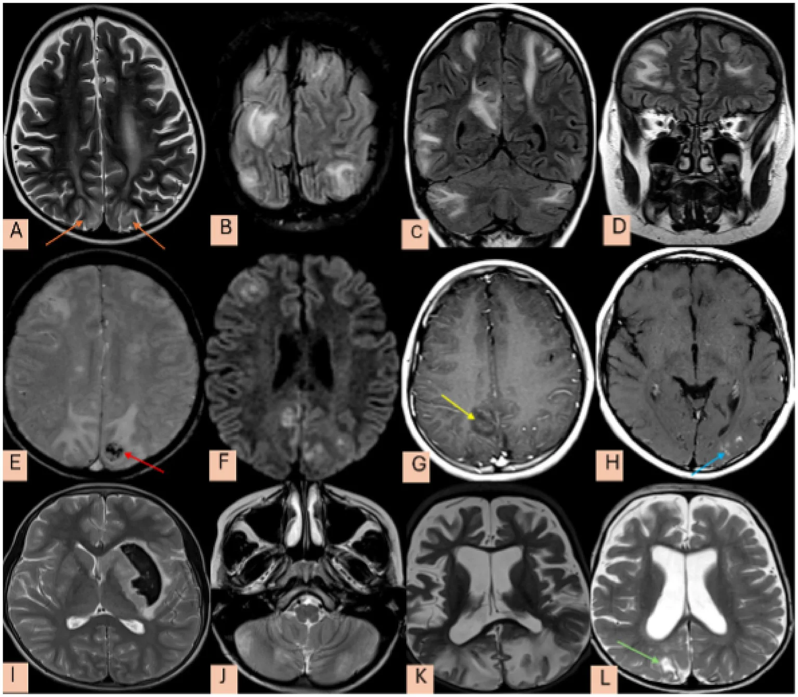
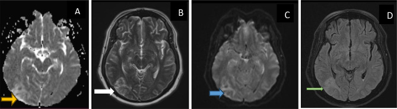
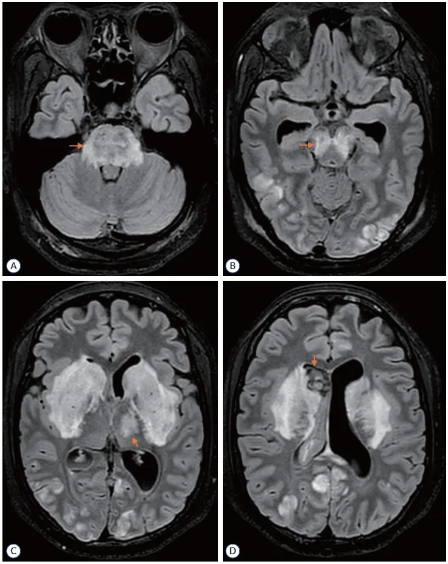

3031 — Bệnh não sau phục hồi (PRES): phù vận mạch vùng đỉnh–chẩm, thể trung tâm, xuất huyết và cạm bẫy "giả đột quỵ"
Tags: pattern:phu-van-mach pattern:phu-dinh-cham pattern:phu-doi-xung pattern:xuat-huyet-nao vung:nao score:PRES-imaging protocol:MRI-so-nao protocol:MRV incidentaloma:xuat-huyet-vi-the
Mức chắc chắn (certainty): tổng hợp y văn (literature synthesis) — ghép tổng quan cơ chế – lâm sàng – xử trí (Int J Emerg Med 2026, PMC12922249), phân tích gộp xuất huyết trong PRES (Ann Med Surg 2025, PMC12401445), phân tích gộp thể trung tâm (Neurol Int 2025, PMC12298113), loạt 60 ca người lớn (Sci Rep 2026, PMC12946175), loạt 77 trẻ (Front Neurol 2026, PMC13613123) và 3 ca có ảnh MRI (PMC13396603, PMC13220548, PMC13549776). Số liệu mâu thuẫn giữa các nguồn (tử vong, tỷ lệ hồi phục) được ghi cả hai phía tại chỗ.
Câu hỏi thực hành: nữ 28 tuổi, thai 35 tuần, nhập viện vì đau đầu dữ dội, nhìn mờ, co giật toàn thể, huyết áp 180/110 mmHg, protein niệu +++; CT sọ không cản quang bình thường. MRI: tăng tín hiệu FLAIR đối xứng hai bên vùng đỉnh–chẩm, không hạn chế khuếch tán. Câu hỏi: đây là PRES hay nhồi máu vùng sau, có xuất huyết kèm theo không, hạ áp đến đâu, và vì sao "reversible" không có nghĩa là lành hoàn toàn? Bài chốt theo hai trục: (1) chuỗi xung quyết định bản chất nước — FLAIR sáng + ADC TĂNG = phù vận mạch (PRES); DWI sáng + ADC TỐI = phù độc tế bào (nhồi máu); SWI = xuất huyết; (2) phân bố — đỉnh–chẩm đối xứng là điển hình, thân não/hạch nền/tủy là thể trung tâm (13%) dễ bỏ sót. Nối 3029 – ARIA-E/ARIA-H, 3027 – Xuất huyết thùy do CAA, 229 – PACNS vs RCVS, 216 – Huyết khối tĩnh mạch não, 201 – Protocol CT/MRI sọ não.
1. Tổng quan bệnh học – cơ chế hình ảnh: vì sao là NƯỚC, vì sao ở VÙNG SAU, vì sao có thể chảy máu
- Hai cơ chế hội tụ (không phải một):
- Suy tự điều hòa (autoregulatory failure): huyết áp tăng vượt khả năng co tiểu động mạch → giãn mạch, tăng áp lực mao mạch → dịch huyết tương thoát vào mô.
- Tổn thương nội mô (endothelial injury): thuốc ức chế miễn dịch (tacrolimus, cyclosporine), độc chất, nhiễm trùng, tự miễn, sản giật → giải phóng yếu tố viêm, phá hàng rào máu–não.
- Hệ quả chung: phù vận mạch (vasogenic edema) — nước ở khoang ngoại bào, không phải phù tế bào (PMC12922249).
- TẠI SAO vùng sau (đỉnh–chẩm) hay bị nhất: vòng tuần hoàn sau có phân bố thần kinh giao cảm thưa hơn → khả năng tự điều hòa kém hơn khi huyết áp tăng vọt; cộng với chất trắng dưới vỏ là nơi mạch máu dễ rò nhất → phù đối xứng hai bên vùng đỉnh–chẩm (PMC12922249).
- TẠI SAO FLAIR sáng: nước tự do ngoại bào làm kéo dài T2 → tăng tín hiệu T2/FLAIR; ADC TĂNG (nước khuếch tán tự do) — đây là chốt phân biệt với nhồi máu.
- TẠI SAO có thể xuất huyết: tổn thương nội mô mao mạch đủ nặng → hồng cầu thoát mạch → vi chảy máu vỏ/dưới vỏ (SWI mất tín hiệu), xuất huyết nhu mô, hoặc xuất huyết dưới nhện vùng lồi; xuất huyết không loại trừ PRES (PMC12401445).
- TẠI SAO "reversible" là tên gọi dễ gây nhầm: phần lớn phù tan trong 1–2 tuần, nhưng tổn thương đã xảy ra thì không hồi phục: ~17% có xuất huyết, một phần có nhồi máu/hoại tử vỏ não, và 10–20% còn di chứng (PMC12922249).
- Ngưỡng định lượng phải nhớ:
- Tần suất: 0,04% trẻ nói chung, 0,4% trẻ nhập ICU; 0,69% bệnh nhân lupus; ~0,03% các đợt nhập viện người lớn (PMC12922249).
- Tăng huyết áp lúc đến: ~84% trong tổng quan (PMC12922249); > 90% trong gộp ca xuất huyết (PMC12401445); 55% trong loạt 60 ca Colombia (PMC12946175) — nghĩa là 16–45% KHÔNG có tăng huyết áp rõ.
- Triệu chứng: co giật 60–90% (trẻ 77,9%), đau đầu, nhìn mờ, rối loạn tri giác (PMC12922249, PMC13613123).
- Tử vong: 10–19% trong tổng quan (PMC12922249); 12,7% trong nhóm PRES có xuất huyết (PMC12401445); loạt Colombia tử vong tại viện tới ~6% — khác nhau do chọn bệnh, ghi cả hai.
- Hồi phục: 75–90% hồi phục hoàn toàn trong ~1 tuần, 10–20% di chứng (PMC12922249); 40–44% có di chứng thần kinh/hình ảnh tồn tại trong các loạt nặng.
- Tái phát: ~4%, gắn với yếu tố khởi phát còn tồn tại (cơn tăng huyết áp, lupus bùng phát, suy thận, bệnh hồng cầu hình liềm) (PMC12922249).
- Động kinh dài hạn: chỉ 1–3,9% — không cần kháng động kinh kéo dài cho mọi bệnh nhân (PMC12922249).
2. Mẫu hình + chẩn đoán phân biệt theo vị trí (gamut)
- Mẫu hình cốt lõi: đau đầu + co giật + nhìn mờ + rối loạn tri giác, khởi phát cấp/trong vài ngày, kèm tăng huyết áp hoặc yếu tố khởi phát (sản giật, thuốc ức chế miễn dịch, suy thận, tự miễn, nhiễm trùng, truyền máu).
- Gamut theo vị trí — 4 kiểu hình:
- Đỉnh–chẩm hai bên (parieto-occipital, ~33% trong loạt Colombia) — điển hình, đối xứng, chất trắng dưới vỏ, vỏ thường còn (cortical sparing).
- Thùy trán/đỉnh đơn độc hoặc không đối xứng — dễ nhầm u/viêm; thùy trán hay gặp ở trẻ (PMC12922249).
- Thể trung tâm (central variant PRES, cvPRES) — 13% (95% CI 9–18%): thân não 88% (cầu 70,45%), hạch nền/đồi thị, tiểu não, tủy sống 18%; tăng huyết áp 72%, tử vong chỉ 2% (PMC12298113).
- Thể xuất huyết (hemorrhagic PRES) — ~17%: xuất huyết nhu mô 77,7%, dưới nhện 15,8%, vi chảy máu 6,3%; tử vong 12,7% (PMC12401445).
- Gamut theo bối cảnh (tìm nguyên nhân trước khi gọi "tự phát"):
- Sản khoa: sản giật/tiền sản giật (thai > 20 tuần đến 6 tuần sau sinh).
- Thuốc: tacrolimus, cyclosporine, sirolimus (ghép tạng/tủy), hóa trị, ức chế điểm kiểm soát miễn dịch, erythropoietin, IVIG.
- Thận: suy thận cấp/mạn, lọc máu, hội chứng urê huyết tán huyết (TTP/HUS).
- Tự miễn: lupus (0,69%), xơ cứng bì, viêm mạch.
- Khác: nhiễm trùng/huyết khối nhiễm khuẩn, truyền máu khối lượng lớn, thiếu máu nặng, cường cận giáp, ngộ độc rượu/cocaine.
- Gamut theo hình thái phù (giúp nhớ DDx):
- Đối xứng, vùng sau, không choán chỗ → PRES.
- Một bên, có choán chỗ, phù lan rộng → u thần kinh đệm/nhiễm trùng.
- Theo lãnh thổ mạch, hạn chế khuếch tán → nhồi máu.
- Phù + huyết khối xoang trên MRV → huyết khối tĩnh mạch não, không phải PRES (dù có thể chồng lấp).
- Phù + vi chảy máu thùy + cSS ở người già → CAA-ri/ABRA, không phải PRES.
- Gợi nhớ "PRES" khi đọc MRI: Posterior (vùng sau) · Reversible (phù vận mạch, ADC tăng) · Edema (FLAIR sáng) · Sparing cortex (vỏ còn, phù ở chất trắng dưới vỏ).
 MRI FLAIR lát trục: tăng tín hiệu đối xứng hai bên vùng đỉnh–chẩm, lan theo vỏ và chất trắng dưới vỏ (mũi tên đỏ), điển hình của phù vận mạch trong PRES. Bệnh nhân sản giật, kèm nhồi máu cầu (ảnh khác trong cùng ca) — cho thấy PRES có thể không "lành" hoàn toàn. Nguồn: Radiol Case Rep 2026 (PMC13396603), Fig. 1, CC BY-NC-ND 4.0. Nguyên bản, không crop.
MRI FLAIR lát trục: tăng tín hiệu đối xứng hai bên vùng đỉnh–chẩm, lan theo vỏ và chất trắng dưới vỏ (mũi tên đỏ), điển hình của phù vận mạch trong PRES. Bệnh nhân sản giật, kèm nhồi máu cầu (ảnh khác trong cùng ca) — cho thấy PRES có thể không "lành" hoàn toàn. Nguồn: Radiol Case Rep 2026 (PMC13396603), Fig. 1, CC BY-NC-ND 4.0. Nguyên bản, không crop.

Loạt 77 trẻ PRES: (A,B) T2/FLAIR tăng tín hiệu đỉnh–chẩm hai bên (mũi tên cam); (C) T2 thân não/cerebellum; (D) FLAIR vành; (E) vi chảy máu vỏ (mũi tên đỏ, T2); (F) hạn chế khuếch tán (DWI sáng) ở vùng đỉnh phải; (G,H) ngấm thuốc màng não/vỏ não; (I–L) di chứng teo não, giãn não thất, tổn thương muộn. Nguồn: Front Neurol 2026 (PMC13613123), Figure 4, CC BY 4.0. Không crop.*3. Bảng so sánh phân biệt (ma trận đối chiếu)
| Thực thể (entity) | Hình ảnh điển hình | Chốt vào (rule-in) | Chốt loại (rule-out) | Gợi ý xác nhận |
|---|---|---|---|---|
| PRES điển hình | Tăng FLAIR/T2 đối xứng vùng đỉnh–chẩm, chất trắng dưới vỏ, vỏ còn, ADC tăng, không hạn chế khuếch tán, ít choán chỗ | Bối cảnh tăng huyết áp/sản giật/thuốc + phù đối xứng vùng sau + ADC tăng | DWI hạn chế + ADC tối theo lãnh thổ mạch → nhồi máu; choán chỗ, phù một bên → u | MRI FLAIR + DWI/ADC + SWI; theo dõi tan sau 1–2 tuần |
| PRES thể trung tâm (cvPRES) | Tăng T2/FLAIR thân não (cầu 70%), hạch nền, đồi thị, tiểu não, ít/không tổn thương vỏ | Phù trung tâm + tăng huyết áp + không theo lãnh thổ mạch | Tổn thương đối xứng hạch nền do ngộ độc/thiếu máu khác bối cảnh; nhồi máu cầu có DWI hạn chế | MRI toàn bộ trục (không chỉ lát đỉnh); 13% PRES là thể này |
| PRES xuất huyết | Ổ máu tụ nhỏ/nhu mô, SAH vùng lồi, vi chảy máu trên SWI trong vùng phù | SWI mất tín hiệu trong vùng phù FLAIR | Xuất huyết đơn độc không phù → CAA/ICH; máu trong u → u | SWI/T2* bắt buộc; CT cấp nếu tri giác xấu |
| ARIA-E (kháng thể kháng amyloid) | Phù/tràn dịch rãnh vùng sau, ADC không giảm, bệnh nhân đang dùng lecanemab/donanemab | Cửa sổ 2–6 tháng sau liều kháng amyloid + phù mới + không tăng HA | Bối cảnh sản giật/thuốc ức chế miễn dịch/tăng HA → PRES | MRI FLAIR/SWI/DWI; ngừng thuốc theo phác đồ (bài 3029) |
| CAA-ri / ABRA | Phù không đối xứng, nhiều ổ, kèm vi chảy máu thùy + siderosis vỏ (SWI), người > 50 tuổi | Phù + dấu hiệu CAA (Boston 2.0) + không có yếu tố khởi phát PRES | Phù đối xứng vùng sau + tăng HA → PRES | MRI SWI + T2/FLAIR; đáp ứng corticoid; bài 3027 |
| Nhồi máu vùng sau (PCA/vertebrobasilar) | Theo lãnh thổ mạch, DWI hạn chế + ADC tối, có thể tắc mạch lớn | DWI/ADC hạn chế + theo lãnh thổ + thiếu hụt khu trú tương ứng | ADC tăng + phù lan ngoài lãnh thổ → PRES | DWI/ADC, MRA/CTA; không dùng tiêu sợi huyết nếu là PRES |
| Huyết khối tĩnh mạch não (CVST) | Phù hai bên/không đối xứng, có thể xuất huyết, xoang tăng tín hiệu trên T1/T2, khuyết thuốc trên MRV/CTV | Khuyết thuốc xoang + D-dimer + đau đầu tăng dần | MRV bình thường + phù đối xứng điển hình → PRES | MRV/CTV bắt buộc ở PRES có xuất huyết/không điển hình (bài 216) |
| Viêm não do HSV | Thùy thái dương/đảo, một hoặc hai bên, hạn chế khuếch tán, có xuất huyết | Sốt + co giật + thái dương + DWI hạn chế | Đỉnh–chẩm, ADC tăng, không sốt → PRES | MRI + PCR HSV dịch não tủy; không chờ kết quả mới dùng acyclovir |
| U thần kinh đệm thâm nhiễm | Phù một bên, choán chỗ, không theo mạch, có thể ngấm thuốc | Choán chỗ + phù tiến triển + ngấm thuốc | Đối xứng, không choán chỗ, tan nhanh → PRES | MRI T1+Gd; theo dõi 2–4 tuần (u không tan) |

(A) ADC: tăng tín hiệu (mũi tên vàng) ở vùng chẩm trái → phù vận mạch, không phải nhồi máu. (B) T2: tăng tín hiệu vỏ/dưới vỏ chẩm trái (mũi tên trắng). (C) DWI không sáng tương ứng. (D) FLAIR: tăng nhẹ (mũi tên xanh). Bệnh nhân này còn xuất huyết não thất — PRES có thể xuất huyết. Nguồn: Int J Emerg Med 2026 (PMC13220548), Fig. 3, CC BY 4.0. Không crop.4. Protocol chụp + xử trí theo bậc + theo dõi
4.1 Protocol hình ảnh
- MRI sọ là chuẩn (CT chỉ để loại xuất huyết cấp/khi bệnh nhân không hợp tác): FLAIR + T2 + DWI/ADC + SWI/T2* + T1±Gd; thêm MRA/MRV khi: xuất huyết, không điển hình, hoặc nghi huyết khối xoang (PMC12922249).
- Bắt buộc có ADC — không chẩn đoán "phù" chỉ bằng DWI (T2 shine-through dễ đọc nhầm là hạn chế khuếch tán).
- Bắt buộc có SWI/T2* — 17% PRES có xuất huyết, và vi chảy máu đổi tiên lượng (PMC12401445).
- Chụp toàn bộ trục não (kể cả cầu, hành não, tiểu não) vì 13% là thể trung tâm, dễ bỏ sót nếu chỉ chụp 4–5 lát đỉnh.
- Chụp lại 2–4 tuần (hoặc sớm hơn nếu xấu đi) để xác nhận tính "phục hồi": phù tan = PRES; tổn thương còn/ngấm thuốc/teo = đã có nhồi máu hoặc bệnh khác.
- Ghi báo cáo theo 4 mục: (1) vị trí + đối xứng; (2) FLAIR/ADC (vận mạch vs độc tế bào); (3) SWI (xuất huyết/vi chảy máu); (4) có/không choán chỗ — đây là 4 câu quyết định chẩn đoán.
4.2 Xử trí — hạ áp lực "vừa phải", không "hạ thật nhanh"
- Mục tiêu huyết áp: giảm từ từ, nhắm huyết áp động mạch trung bình (MAP) 105–125 mmHg; tránh tụt áp nhanh vì có thể gây thiếu máu não (PMC12922249).
- Tăng huyết áp ác tính: giảm huyết áp tâm trương về 100–105 mmHg trong vài giờ (PMC12922249).
- Sản giật/tiền sản giật: magie sulfat phòng co giật + đình chỉ thai là điều trị nguyên nhân; không chờ MRI mới xử trí.
- Thuốc ức chế miễn dịch: ngừng/đổi thuốc (tacrolimus/cyclosporine) sau khi hội chẩn ghép; không tự ngừng ở bệnh nhân ghép mới.
- Co giật: levetiracetam hoặc thuốc theo phác đồ; không duy trì kháng động kinh dài hạn trừ khi động kinh thực sự (1–3,9%) (PMC12922249).
- Hỗ trợ: ~70% cần ICU, 35–40% cần thở máy tạm thời (PMC12922249); kiểm soát đường huyết, điện giải, thận.
- Corticoid: không có bằng chứng thuyết phục trong PRES nói chung; không dùng thay cho kiểm soát huyết áp/ngừng thuốc (PMC12922249).
flowchart TD
A["Đau đầu, co giật, nhìn mờ, rối loạn tri giác<br/>± tăng huyết áp"] --> B["CT sọ loại xuất huyết cấp<br/>MRI: FLAIR, T2, DWI/ADC, SWI"]
B --> C{"Phù FLAIR vùng sau<br/>và ADC TĂNG?"}
C -->|Không, ADC tối theo lãnh thổ| D["Nhồi máu cấp<br/>không dùng tiêu sợi huyết nhầm"]
C -->|Có| E{"Có xuất huyết<br/>trên SWI?"}
E -->|Có| F["PRES thể xuất huyết<br/>tiên lượng nặng hơn"]
E -->|Không| G["PRES điển hình"]
F --> H{"Có khuyết thuốc xoang<br/>trên MRV?"}
G --> H
H -->|Có| I["Huyết khối tĩnh mạch não<br/>xử trí theo CVST"]
H -->|Không| J["Hạ MAP về 105–125 mmHg<br/>ngừng thuốc/thuốc ức chế miễn dịch"]
J --> K{"Có thai/sản giật?"}
K -->|Có| L["MgSO4 + đình chỉ thai"]
K -->|Không| M["Điều trị nguyên nhân + chống co giật"]
L --> N["MRI lại sau 2–4 tuần"]
M --> N
N --> O{"Phù tan?"}
O -->|Có| P["PRES đã xác nhận — theo dõi di chứng"]
O -->|Không| Q["Xem lại chẩn đoán: u, nhiễm, CVST"]
4.3 Tiên lượng và theo dõi dài hạn
- Hồi phục lâm sàng nhanh (giờ–ngày) sau khi kiểm soát huyết áp/nguyên nhân là đặc trưng, nhưng hình ảnh có thể chậm hơn (1–2 tuần).
- Di chứng cần tầm soát: động kinh muộn (1–3,9%), suy giảm nhận thức, khiếm thị vỏ não, teo não khu trú — nhất là thể xuất huyết/nhồi máu.
- Tái phát ~4% — kiểm soát huyết áp lâu dài và tránh dùng lại thuốc khởi phát là cách phòng chính.
- Phụ nữ sau PRES sản khoa: tư vấn nguy cơ tái phát ở thai kỳ sau, theo dõi huyết áp và protein niệu sớm.
5. Biến thể bình thường và cạm bẫy
- PRES một bên/không đối xứng — có thật, dễ nhầm u hoặc nhồi máu; không choán chỗ + ADC tăng + bối cảnh điển hình giúp phân biệt; chụp lại 2–4 tuần là "nghiệm pháp thời gian".
- PRES KHÔNG có tăng huyết áp — 16–45% tùy loạt (84% có HA trong tổng quan; 55% trong loạt Colombia) → đừng loại PRES chỉ vì huyết áp bình thường, nhất là sản giật, lupus, thuốc ức chế miễn dịch, nhiễm trùng.
- "T2 sáng = nhồi máu" — sai: phải xem ADC. DWI sáng + ADC tăng = T2 shine-through (không phải hạn chế khuếch tán thật).
- "Reversible" không có nghĩa là không để lại gì: ~17% xuất huyết, một phần nhồi máu/hoại tử vỏ, 10–20% di chứng, tử vong 10–19% ở các loạt nặng → không được xem là "lành tính".
- Vỏ não "còn" (cortical sparing) là dấu hiệu kinh điển, nhưng thể nặng có thể mất vỏ — không dùng để loại PRES.
- PRES + xuất huyết não thất (thể trung tâm) — dễ nhầm xuất huyết não thất do tăng huyết áp đơn thuần; nhìn phù FLAIR đối xứng cầu/hạch nền và bối cảnh sản giật/thuốc.
- PRES và RCVS chồng lấp: co thắt mạch có thể thấy trên MRA; không gọi RCVS chỉ vì MRA có co thắt khi bối cảnh là PRES — theo dõi và chụp lại.
- Bỏ sót tổn thương kèm theo: nhồi máu cầu, huyết khối xoang, xuất huyết dưới nhện — luôn đọc DWI + SWI + MRV cùng lúc.
- Thuốc ức chế miễn dịch (tacrolimus): nồng độ thuốc trong "khoảng trị liệu" vẫn có thể gây PRES → không loại trừ vì nồng độ bình thường; ngừng/đổi thuốc theo hội chẩn.

MRI FLAIR: (A) phù đối xứng cầu (mũi tên cam); (B) phù trung não và vùng sau; (C) phù hạch nền hai bên; (D) phù đồi thị + xuất huyết não thất (mũi tên cam) — thể trung tâm của PRES, không điển hình vùng đỉnh–chẩm. Nguồn: J Korean Neurosurg Soc 2026 (PMC13549776), Fig. 2, CC BY-NC 4.0. Không crop.6. Tự lượng giá — Blind Quiz
Ca 1 — Nữ 26 tuổi, sản giật sau sinh, đau đầu và nhìn mờ. Nhìn FLAIR, mô tả trước khi mở đáp án.
- Câu hỏi: (a) Tổn thương ở đâu, đối xứng hay không? (b) Chuỗi xung nào cần thêm để chắc đây là phù vận mạch? (c) Có cần loại trừ huyết khối xoang không?
Bấm để hiện đáp án
- (a) Tăng tín hiệu FLAIR đối xứng hai bên vùng đỉnh–chẩm, lan vỏ + chất trắng dưới vỏ, không choán chỗ → điển hình PRES.
- (b) DWI + ADC: ADC tăng (không hạn chế khuếch tán) xác nhận phù vận mạch; SWI để tìm xuất huyết/vi chảy máu.
- (c) Có — nhất là khi có xuất huyết hoặc không điển hình: MRV/CTV loại huyết khối tĩnh mạch não (phù + xuất huyết có thể giống PRES).
- Nguồn ảnh: Radiol Case Rep 2026 (PMC13396603), Fig. 1 — CC BY-NC-ND 4.0.
Ca 2 — Bệnh nhân tăng huyết áp, co giật, liệt nhẹ nửa người. Bốn ô MRI: ô nào chứng minh đây KHÔNG phải nhồi máu?
- Câu hỏi: (a) Ô A (ADC) nói gì? (b) Vì sao DWI không sáng lại quan trọng? (c) Có gì bất thường ngoài phù?
Bấm để hiện đáp án
- (a) ADC TĂNG tín hiệu ở vùng chẩm trái (mũi tên vàng) = nước tự do ngoại bào → phù vận mạch, không phải phù độc tế bào.
- (b) DWI không hạn chế khuếch tán (không sáng) loại nhồi máu cấp; nếu DWI sáng + ADC tối mới là nhồi máu.
- (c) Bệnh nhân có xuất huyết não thất (ảnh CT trong bài gốc) → PRES thể xuất huyết, tiên lượng nặng hơn; cần SWI và MRV.
- Nguồn ảnh: Int J Emerg Med 2026 (PMC13220548), Fig. 3 — CC BY 4.0.
Ca 3 — Sản phụ sản giật, hôn mê, CT có máu trong não thất. Nhìn FLAIR: tổn thương không ở đỉnh–chẩm. Chẩn đoán?
- Câu hỏi: (a) Vị trí phù? (b) Vì sao dễ bỏ sót nếu chỉ chụp vài lát đỉnh? (c) Hướng xử trí và theo dõi?
Bấm để hiện đáp án
- (a) Cầu (A), trung não (B), hạch nền (C), đồi thị (D) — thể trung tâm (cvPRES), chiếm 13% PRES; thân não 88%, cầu 70,45%.
- (b) Vì tổn thương nằm dưới lều, ngoài vùng đỉnh–chẩm điển hình → phải chụp toàn bộ trục (cầu→hành não→tiểu não) mới thấy.
- (c) Kiểm soát huyết áp từ từ (MAP 105–125), MgSO4 + đình chỉ thai nếu sản giật, theo dõi xuất huyết não thất, MRI lại 2–4 tuần; thể trung tâm có tử vong thấp (~2%) nhưng vẫn có thể để lại di chứng.
- Nguồn ảnh: J Korean Neurosurg Soc 2026 (PMC13549776), Fig. 2 — CC BY-NC 4.0.
Bài liên quan chéo
- 3029 – ARIA khi dùng kháng thể kháng amyloid: ARIA-E vs ARIA-H (PRES là hàng DDx bắt buộc của ARIA-E)
- 3027 – Xuất huyết thùy do CAA ở người già (phù + vi chảy máu thùy ở người già)
- 229 – PACNS vs RCVS (co thắt mạch, phù và xuất huyết vùng lồi)
- 216 – Huyết khối tĩnh mạch não (CVST) (phù hai bên + xuất huyết — phải loại trừ bằng MRV)
- 201 – Protocol CT/MRI sọ não (chọn chuỗi xung, DWI/ADC, SWI)
- 211 – Đột quỵ não (phân biệt phù vận mạch với nhồi máu cấp)
- 218 – Thoát vị não & não úng thủy (khi PRES nặng gây phù lan tỏa)
Ảnh
3031_phu-dinh-cham_FLAIR_PMC13396603-F1.jpg— phù đối xứng đỉnh–chẩm trên FLAIR, Radiol Case Rep 2026 (PMC13396603), Fig. 1, CC BY-NC-ND 4.0 (nguyên bản, không crop).3031_phu-van-mach-ADC_MRI_PMC13220548-F3.jpg— ADC tăng + T2/DWI/FLAIR cùng ca, Int J Emerg Med 2026 (PMC13220548), Fig. 3, CC BY 4.0.3031_the-trung-tam_FLAIR_PMC13549776-F2.webp— thể trung tâm: cầu, trung não, hạch nền + xuất huyết não thất, J Korean Neurosurg Soc 2026 (PMC13549776), Fig. 2, CC BY-NC 4.0.3031_tre-em_MRI_PMC13613123-F4.webp— 12 ô MRI ở trẻ PRES (phù, hạn chế khuếch tán, xuất huyết, di chứng), Front Neurol 2026 (PMC13613123), Figure 4, CC BY 4.0.- Nguồn + giấy phép từng ảnh:
images/CREDITS.md. Không tạo composite vì mỗi ảnh đã là bảng nhiều ô có nhãn mũi tên.
Không dùng để chẩn đoán độc lập khi chưa có người hướng dẫn.